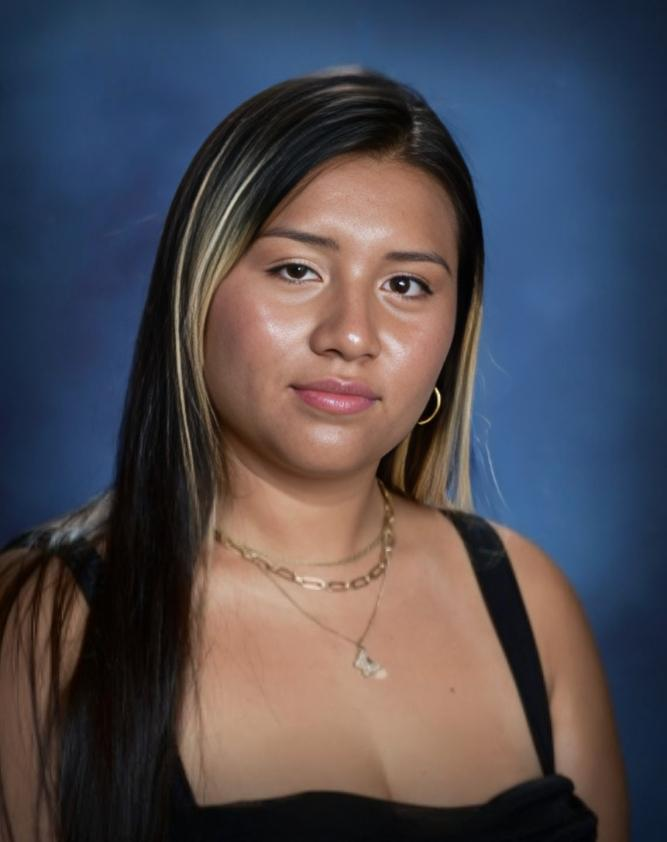

About Me
Hi, I’m Lary Renderos, a trilingual student from Arlington, Virginia, with a strong passion for justice, equity, and leadership. I'm currently earning my high school diploma while pursuing an Associate’s Degree in Liberal Arts. I’m focused on building a future in law, where I can use my voice to stand up for others and contribute to meaningful change.

Early Identification Program
Being accepted into the Early Identification Program (EIP) at George Mason University was a turning point for me. The program is designed for first-generation college-bound students, and being chosen made me feel seen and supported. EIP provided me with college readiness training, mentorship, and workshops that strengthened both my academic skills and my self-confidence.
Through EIP, I discovered that higher education is not just a possibility for me, it's a space where I belong. It helped me prepare not only for college but for the kind of life I want to lead: one rooted in purpose, responsibility, and growth.
Clubs & Community
Through Legal Eagles, the Criminal Justice Club, and volunteering at the Criminal Justice Fair, I’ve explored real-world applications of the legal system. These experiences have given me insight into the justice process, helped me meet professionals in the field, and inspired me to continue advocating for fairness and equity.
Latinas Leading Tomorrow
Joining Latinas Leading Tomorrow has been a powerful experience. It’s helped me embrace my identity, speak up with confidence, and support other young Latina women on similar paths. This program has taught me that representation matters and that leadership starts with knowing who you are and believing your story has value.
I have been president of Latinas Leading Tomorrow for 3 years, which has strengthened my leadership skills and commitment to empowering others.
Skills That Set Me Apart
- Trilingual: Fluent in English, Spanish, and French
- Excellent Communicator: Confident in speaking and writing
- Independent & Collaborative: Comfortable leading and supporting
- Customer Service Experience: Able to handle real-life communication and planning